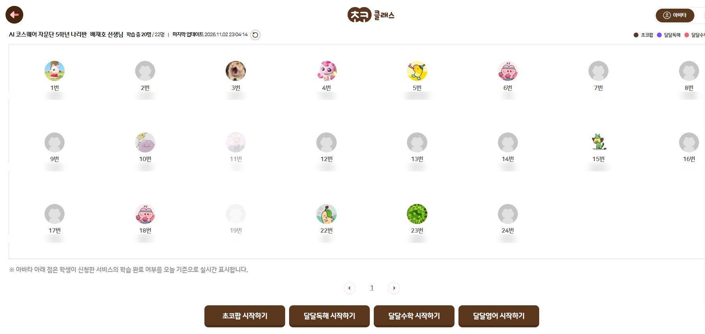
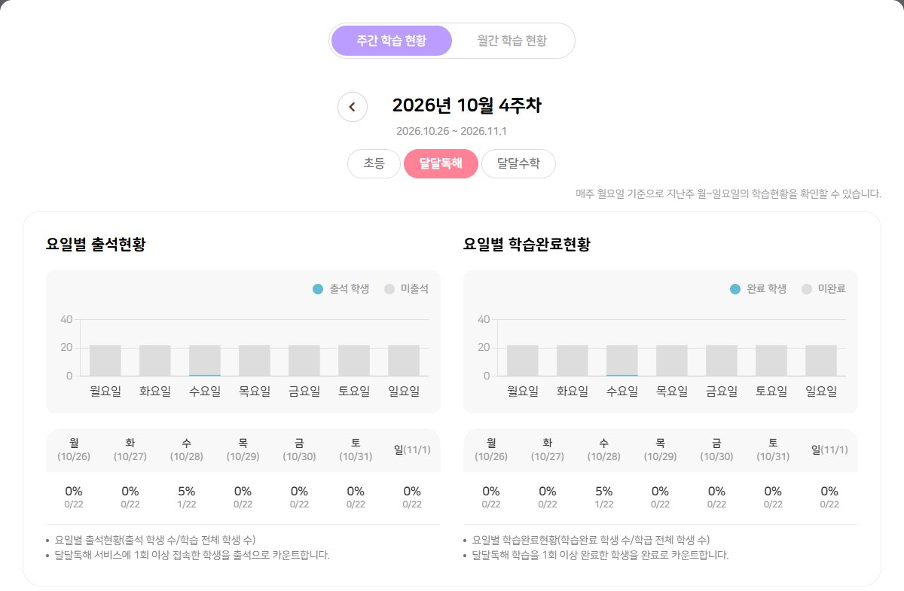
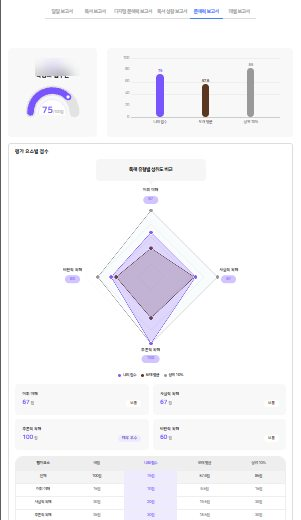
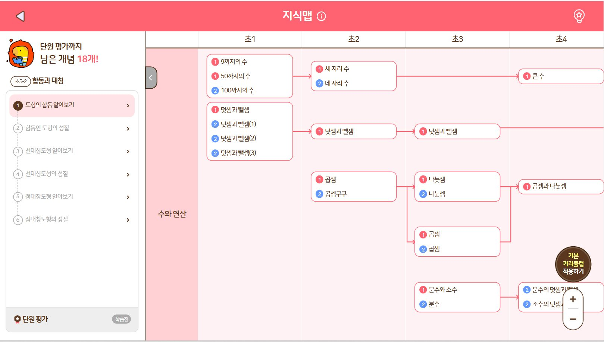
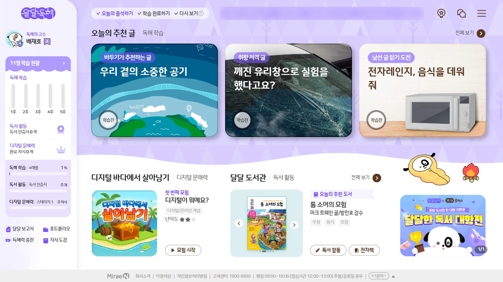

2026 교원 연수 · 미래엔 초코클래스
Part 1 달달수학으로 하는 수학 부진아 맞춤 지도
Part 2 달달독해로 만드는 아침활동 독서 습관
발표: [발표자 이름] · [소속 학교] · [연수 일자]
오늘의 연수
달달수학 진단과 지식맵으로 부진 학생이 막힌 이전 학년 개념을 찾는다
달달독해로 출석 → 읽기 → 완료가 매일 반복되는 아침활동을 운영한다
초코클래스 학습현황과 학생별 리포트로 다음 지도를 정한다
왜 필요할까요
학생별 진단 + 맞춤 콘텐츠 + 교사용 현황판 = 초코클래스로 두 고민을 함께 다룹니다
초코클래스 한눈에 보기
국어·수학·사회·과학 교과서 진도 연계 학습. 학급 시간표로 운영
수학 실력 진단 → 학생별 맞춤 코스. 지식맵·계산력·고난도 학습
문해력·독서 성향 진단 → 맞춤 글 추천. 6개 분야 2,300여 개 지문
학급 만들기 · 학생 등록 · 실시간 현황 · 주간/월간 학습현황 · 학생별 리포트. 태블릿·PC·크롬북 모두 사용 가능
교사가 자주 보는 화면
수업 중
초코클래스 시작 → 아바타로 접속·오늘 완료 여부를 실시간 확인. 교실 TV용

매주 월요일
학급 관리 → 학습현황. 요일별 출석·학습완료, 학생별 학습률과 평균 점수

상담·피드백
학생현황 → 리포트. 달달수학·달달독해 보고서, 4종 진단 결과

Part 1
막힌 곳을 찾고, 거슬러 올라가 채우고, 다시 제 학년으로
달달수학 지도 흐름
1
수학 실력 진단 응시. 결과는 학생별 리포트에서 확인
2
선수 개념을 따라 이전 학년 결손 개념 찾기
3
개념 학습 → 수준별 학습 → 맞춤 학습
4
연산이 약하면 계산력, 개념을 마치면 단원별
5
일일·단원 평가·종합 보고서로 다음 지도 결정
문제 풀이 중 도구: 질문노트 · 연습장 · 개념영상 — 막히면 바로 영상으로 돌아가 다시 봅니다
핵심 기능 · 지식맵
예시 · 4학년 「곱셈과 나눗셈」이 어려운 학생
초1 · 출발점
초2
초3
초4 · 지금 단원
← 막히면 왼쪽으로 거슬러 올라가 결손을 채우고, 다시 오른쪽으로 돌아옵니다
초1~초6 개념을 수와 연산 · 변화와 관계 · 도형과 측정 · 자료와 가능성 4개 영역으로 연결 (2022 개정)
결손을 채우면 ‘기본 커리큘럼 적용하기’로 제 학년 진도에 복귀. 단원 평가까지 남은 개념 수도 표시
실제 화면 · 지식맵

왼쪽
지금 단원의 개념 목록과 ‘단원 평가까지 남은 개념’ 수
가운데
학년별 개념이 화살표로 연결. 따라가면 선수 개념이 보임
오른쪽 아래
‘기본 커리큘럼 적용하기’로 제 학년 복귀
수업안 1 · 40분 보충 지도
| 단계 | 학생 활동 | 교사 지원 |
|---|---|---|
| 도입 5분 | 간편 로그인, ‘이 달의 나의 현황’ 확인 | 지난 리포트에서 잘한 점 칭찬, 오늘 목표 정하기 |
| 결손 찾기 7분 | 지식맵에서 완료 못 한 이전 학년 개념 찾기 | TV로 지식맵 화살표를 함께 따라가기 |
| 개념 쌓기 15분 | 필수 학습: 개념 학습 → 수준별 학습 | 순회하며 연습장 확인, 질문노트 모으기 |
| 연산 보충 8분 | 선택 학습: 계산력 또는 단원별 학습 | 부진 학생에게 고난도 학습은 권하지 않기 |
| 정리 5분 | 오늘 알게 된 개념 한 문장 말하기 | 일일 보고서 발행 확인, 남은 맞춤 학습은 과제로 |
대상 선별과 3차시 운영
1
진단 결과 확인, 가장 아래 결손 개념부터 필수 학습
2
이어지는 선수 개념 필수 학습 + 계산력 학습
3
본 단원 필수 학습, 단원 평가 보고서로 성장 확인
Part 2
매일 같은 시간, 같은 순서로 15분. 4주면 루틴이 됩니다
수업안 2 · 아침 15분
8:40
간편 로그인 후 ‘오늘의 출석하기’ 누르기
교사: 우리반 현황을 TV에
8:42
오늘의 추천 글 3편 중 하나 선택
교사: 주 2회는 ‘낯선 글’
8:44
어휘 콕콕 → 독해 쑥쑥 → 실력 팡팡
교사: ‘질문하기’ 도와주기
8:52
‘학습 완료하기’ 후 짝에게 새로 안 낱말 하나
교사: 색 점으로 완료 확인
실제 화면 · 달달독해 첫 화면

맨 위
출석하기 → 학습 완료하기 → 다시 보기 체크리스트
가운데
오늘의 추천 글 3편 중 하나를 골라 읽기
아래
수요일엔 디지털 바다, 금요일엔 달달 도서관
달달독해 글 한 편
오늘의 새로운 발견
배경지식을 넓히는 글
오늘 펼쳐 읽는 글
읽으면 즐거운 관심 분야 글
낯선 글 읽기 도전
평소 안 읽던 분야에 도전
글마다 분야와 ‘독해 지수’ 표시 · 글 목록은 주 단위로 바뀜
① 어휘 콕콕
글에 나올 낱말을 카드로 먼저 익힌다
② 독해 쑥쑥
글을 읽으며 내용을 이해한다
③ 실력 팡팡
문제를 풀며 이해를 확인한다
주간 운영표와 4주 계획
월
추천 글 자유 선택
지난주 결과 공유
화
낯선 글 읽기 도전
관심 밖 분야
수
디지털 바다에서 살아남기
디지털 문해력
목
낯선 글 읽기 도전
분야 넓히기
금
달달 도서관 책 읽기
5단계 독서 활동
| 주차 | 목표 | 교사 지원 |
|---|---|---|
| 1주 | 진단, 루틴 익히기 | 문해력·독서 성향 진단 응시, 15분 흐름 연습 |
| 2주 | 매일 완료하기 | 주간 출석현황으로 놓친 학생 확인, 칭호·인증서로 칭찬 |
| 3주 | 약한 영역 알기 | 글 7편 이상이면 발행되는 ‘달달 보고서’를 학생과 함께 읽기 |
| 4주 | 학급 목표 달성 | 학급 누적 권수·참여율 목표 점검, 포트폴리오 나누기 |
습관을 이어 가는 장치
마음통통
탐색똑똑
생각씽씽
표현척척
정리톡톡
사례: 초코클래스 × 달달 도서관 반 대항 이벤트 ‘달달한 독서 대항전’ (2026.10.12~11.8, 4주)
리포트 읽는 법
어휘 이해
15점
사실적 독해
30점
추론적 독해
35점
비판적 독해
20점
요소별 배점 · 나의 점수를 또래 평균, 상위 10%와 비교하고, 문학(40점)·비문학(60점) 영역도 나눠 보여 줍니다
성향 진단 · 학습 진단 · 일일 · 단원 평가 · 종합 보고서
내일 바로 시작하기
학급 만들기, 학생 등록 (엑셀 일괄등록 가능)
보호자 동의 받기 (서면 또는 알림톡·문자)
학급 코드 + PIN 4자리 간편 로그인 안내
첫 시간에 4종 진단 응시 (학습 성향·독서 성향·문해력·수학 실력)
진단 다시보기를 누르면 이전 결과가 지워지고 처음부터 재응시
달달수학·달달독해는 학급 시간표가 없음 → 아침활동 시간을 일과로 정하기
학생현황 화면엔 실명·보호자 연락처 → TV엔 우리반 현황만
교사 학생 모드 시연은 로그인 유효시간 60분
달달수학
진단 → 지식맵 → 필수 학습 → 리포트
달달독해
출석 → 고르기 → 3단계 읽기 → 나누기
초코클래스 고객센터 1800-8890 · 교사 화면 오른쪽 퀵메뉴 ‘이용 가이드’